|
|||||||||||||||||
|
Server time: 2006-01-10 05:52:21 |
SPOJ Problem Set131. Square danceProblem code: SQDANCE
You are hired by french NSA to break the RSA code used on the Pink
Card. The easiest way to do that is to factor the public modulus and
you have found the fastest algorithm to do that, except that you have
to solve a subproblem that can be modeled in the following way.
We call relation a set of two primes p,q, where p and q are distinct elements of . You dispose of a collection of R relations 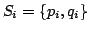 and you are interested in finding sequences of these, 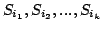 such that 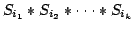is a perfect square.
The way you look for these squares is the following. The ultimate goal
is to count squares that appear in the process. Relations arrive one at
a time. You maintain a collection 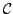 of relations
that do not contain any square subproduct. This is easy: at first, is empty. Then a relation arrives and
begins to grow.
Suppose a new relation 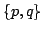 arrives. If no square
appears when adding to ,
then is added to the collection.
Otherwise, a square is about to appear, we increase the number of
squares, but we do not store this relation, hence
keeps the desired property.
So we count 1 and do not store 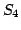 in . Now we consider 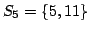 that could make a square with 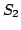,
so we count 1 square more. Then 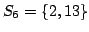 is
put into . Now 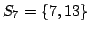 could make
the square 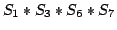. Eventually, we get 3
squares.
Input
The first line of the input contains a number T <= 30 that indicates the number of test cases to follow. Each test case begins with a line containing two integers P and R: 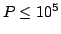 is the number of primes occurring in the test
case; R (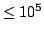) is the number of sets of primes
that arrive. The subsequent R lines each contain two integers i and j
making a set 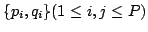. Note that we actually do not
deal with the primes, they are irrelevant to the solution.
OutputFor each test case, output the number of squares that can be formed using the preceding rules. ExampleInput: 2 6 7 1 2 3 5 2 4 1 4 3 5 1 6 4 6 2 3 1 2 1 2 1 2 Output: 3 2
|
||||||||||||||||
| |||||||||||||||||